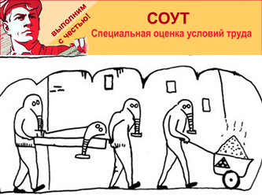

Дегтерев Д.Б., кандидат медицинских наук,
консультант Российского комитета рабочих
15–16 октября 2016 года в Нижнем Новгороде состоялось очередное заседание Российского комитета рабочих. Перед заседанием состоялась международная научно-практическая конференция, на тему: «Экономическое развитие на основе сокращения рабочего дня». Сокращение рабочего дня до 6 часов явилось ключевым вопросом самого заседания РКР, красной нитью прошло через все доклады и было включено в проекты постановлений по каждому из рассматривавшихся вопросов. С постановлениями научно-практической конференции и Российского комитета рабочих, а также видеозаписью конференции можно ознакомиться на сайте московского отделения Фонда рабочей академии, на Ленинградском интернет-телевидении Лен.ру и на сайте Красное ТВ. Лен.ру также начало выкладывать видеозаписи осеннего заседания Российского комитета рабочих. Как всегда, материалы научно-практической конференции и РКР будут размещены в газете «Народная правда», а по материалам Конференции будет издан сборник научных трудов.
Четвертый вопрос, рассматривавшийся на РКР — «Обмен опытом борьбы за улучшение условий труда» — не стал исключением, так как при рассмотрении его невозможно было не коснуться продолжительности рабочего дня, как важнейшего фактора, непосредственно влияющего на здоровье работников. К условиям труда, в широком плане, как это понимал К.Маркс, т. е. к материальным условиям, в которых совершается производство, относятся и продолжительность труда и заработная плата. В непосредственно условия труда в узком смысле, как мы понимаем их сегодня — совокупность факторов производственной среды и трудового процесса, влияющих на здоровье работников. Низкая заработная плата и чрезмерно длинный рабочий день — два фактора, значительно ухудшающие здоровье работников — находятся в неразрывной связи. Низкая заработная плата побуждает работников трудиться дольше, работать сверхурочно, без выходных и отпусков, устраиваться на дополнительную работу, что дает повод нанимателям еще больше опускать зарплату. Выходом из этого замкнутого круга является как раз законодательное ограничение рабочего дня, ведь сокращение рабочего дня с 8 до 6 часов с сохранением заработной платы повышает почасовую оплату труда на 33,3%! Никакая индексация не сравнится с таким одномоментным увеличением оплаты труда.
Условия труда в узком смысле оказывают непосредственное влияние на здоровье работников, поэтому цель борьбы за улучшение условий труда — это сбережение здоровья работников. Условия труда, находятся целиком и полностью под контролем работодателя, но это не значит, что работники и их организации — профсоюзы — могут сложить с себя ответственность за их состояние и улучшение. Условия труда, как ничто другое, не характеризуют разницу в положении рабочего класса, класса буржуазии и других слоев общества, не занятых в сфере производства материальных благ. Вредные физические, химические и биологические факторы, физическая нагрузка, монотонность движений, статическая поза встречаются почти исключительно на рабочих местах производственной сферы. Конечно, малая двигательная активность и работа с мониторами могут рассматриваться как факторы, вредящие здоровью, например, офисных служащих, но они же не привязаны к своему стулу особенностями технологического процесса, и компьютер — это не конвейер и не станок.
Поэтому улучшение условий труда относится к коренным интересам рабочего класса, борьба за это улучшение идет при капитализме и продолжается в первой фазе коммунизма — при социализме. Говорить о полном уничтожении классов до тех пор, пока сохраняется разница в условиях труда рабочего класса и других слоев социалистического общества не приходится. И движение в направлении полного коммунизма должно идти параллельно путем сокращения рабочего времени и улучшения условий труда в узком смысле.
Кардинальное улучшение условий труда, как и дальнейшее сокращение рабочего времени, возможно только на основе научно-технического прогресса путем внедрения нового высокотехнологичного, высокопроизводительного оборудования. По сути это означает создание новых высокотехнологичных рабочих мест. Говоря о реализации майского Указа президента о создании к 2020 году 25 миллионов новых высокотехнологичных рабочих мест, председатель ФНПР П.Шмаков, заявил, что, похоже, в реализации этих указов заинтересован только сам президент и ФНПР. Хотя мы с вами прекрасно понимаем, что в реализации этого указа кровно заинтересован российский рабочий класс и не только ФНПР, но и другие профорганизации, рабочие, боевые профсоюзы.
Согласно оперативной информации Федеральной службы государственной статистики, численность рабочей силы в августе составила 77,5 млн человек, или 53% от общей численности населения страны, в их числе 73,5 млн человек (94,8% рабочей силы) были заняты в экономике, и 4,0 млн человек (5,2%) не имели занятия, но активно его искали, что, согласно методологии Международной организации труда, позволяет считать их безработными. В то же время в государственных учреждениях службы занятости зарегистрировано в качестве безработных 0,9 млн человек, из них 0,7 млн получают пособие по безработице. Понятно, что безработица пагубно сказывается на здоровье человека, поскольку он не имеет достаточных средств к существованию, не имеет свободного времени и к тому же находится в угнетенном состоянии духа из-за высокой степени неопределенности своего положения. Согласно соцопросам, 2/3 работающих боятся потерять работу, что, безусловно, значительно снижает способность людей бороться за свои трудовые права, в том числе и за улучшение условий труда, ситуация с которыми в России остается неблагополучной.
Все последние годы шел непрерывный рост числа рабочих мест в неблагоприятными и вредными условиями труда, о чем мы многократно говорили и на РКР, и на занятиях в Университете рабочих корреспондентов. Так, в 2013 году доля таких рабочих мест составляла 32,2%, в 2013 году — 39,7%, а вот в 2015 году неожиданно сократилась до 39,1%. Чем было вызвано такое внезапное улучшение условий труда, неужели технологическими причинами? Сокращение количества рабочих мест с неблагоприятными условиями труда связано с внедрением специальной оценки условий труда (СОУТ). Из 49 млн рабочих мест, имеющихся в России, на середину 2016 года аттестовано 13 млн, из них 70% по результатом СОУТ присвоен 2 класс опасности. Без каких-либо капиталовложений, без затрат на улучшение условий и охрану труда, одним росчерком пера условия труда из вредных стали допустимыми, а там, где сразу невозможно устранить вредность, был понижен класс опасности со всеми вытекающими последствиями.
СОУТ задумывалась как масштабная оценка состояния рабочих мест в России, что позволило бы спланировать комплекс мероприятий для перехода от системы льгот и компенсаций работающим во вредных и опасных условиях труда к системе управления рисками, осуществить программу нулевого травматизма на производстве. При помощи СОУТ государство рассчитывало переложить часть бюджетной нагрузки на лечение, реабилитацию и социальные выплаты работникам, потерявшим здоровье на производстве, на работодателей (нанимателей), уменьшить налоговую нагрузку на работодателей, создающих благоприятные условия труда для своих работников и тем самым создать стимул для обновления производства, проведения мероприятий по улучшению условий и охране труда.
С одной стороны, государство, как коллективный наниматель, заинтересовано в сохранении здоровья работников, в отличие от индивидуального предпринимателя, для которого затраты на улучшение условий и охрану труда — прямые вычеты из его дохода. С другой стороны, закон о СОУТ и методика СОУТ были приняты таким образом, чтобы максимально облегчить ее проведение для работодателя и обеспечить результаты в его пользу. Нанимателю дано право декларировать условия труда как безопасные, если рабочие места не относятся к спискам 1 и 2, не требуют обязательных медосмотров и для них не предусмотрен более ранний выход на пенсию. В самой методике СОУТ заложена бомба, число контролируемых параметров значительно снижено даже по сравнению с методикой аттестации, а факторы трудового процесса, такие, например, как напряженность, монотонность, на практике вообще не определяются из-за трудоемкости методики. Интернет пестрит объявлениями о проведении СОУТ — от 660 руб за одно рабочее место. Пройти СОУТ не сложнее, чем техосмотр автомобиля — за небольшие деньги вам составят диагностическую карту, при этом сам автомобиль предъявлять к осмотру необязательно. Итогом такой формально, а может быть и заочно проведенной спецоценки является уменьшение класса опасности рабочего места — вплоть до признания его допустимым.
Поскольку сегодняшнее законодательство предусматривает назначение льгот и компенсаций только по результатам аттестации или специальной оценки условий труда, то при «исчезновении» вредности работодатель вправе не предоставлять льготы и компенсации работника. Или, как они работодатели переворачивают это с ног на голову: нет оснований сохранять работникам сокращенный рабочий день, увеличенное время отпуска, лечебное питание, повышенные выплаты за вредные условия труда. Позиция работодателей в целом ясна: нет вредности — нет льгот. Исключение составляют лишь немногие. Так, например, руководством Ковдорского ГОК, несмотря на то, что по результатам СОУТ условия на части рабочих мест признана допустимыми, принято решение сохранить все имеющиеся льготы и компенсации сроком на 5 лет, до окончания срока действия проведенной СОУТ. С научной точки зрения, это правильно, если через 5 лет провести анализ и выяснить, действительно ли есть положительное влияние на здоровье работников, уменьшился ли уровень временной нетрудоспособности, профессиональной заболеваемости, инвалидности и профессионального травматизма на рабочих местах, признанных допустимыми по результатам СОУТ.
Чаще же происходит обратное. Иногда льготы сохраняются для работников с большим стажем работы на предприятии, а на вновь поступающих на работу они уже не распространяются. Так поступило руководство ленинградского Горэлектротранса. Такие действия вносят раскол в рабочие коллективы, и на работниках, которым льготы и компенсации сохранены, лежит двойная обязанность — отстоять и свои интересы, и интересы своих молодых товарищей, которые еще больше ущемлены.
Официальные профорганизации, к сожалению, зачастую занимают соглашательскую позицию по отношению к работодателю и в ходе проведения СОУТ, и в одобрении ее результатов, и во включении в коллективные договора условий, ухудшающих положение работников. Между тем, российский Трудовой кодекс позволяет вносить в коллективные договора повышенные обязательства работодателя по сравнению с минимальными, прописанными в законе. Так, например, если законом предусмотрена продолжительность дополнительного отпуска не менее 7 дней, то нет ничего противозаконного во включении в коллективный договор дополнительного отпуска продолжительностью в дне недели, хотя это, безусловно, встретит возражения работодателя.
Опасность некачественно проведенной без должного контроля со стороны коллективного органа работников СОУТ не только в том, что будут отменены льготы и компенсации за вредные условия труда, хотя, безусловно, это нанесет вред здоровью работников и в недалеком будущем мы столкнемся с тем, что на фоне победного уменьшения доли работников, занятых во вредных и опасных условиях труда, будет наблюдаться рост профессиональной и общей заболеваемости и инвалидности. Основная опасность в том, что у работодателей исчезает стимул к действительному улучшению условий труда, которое, как мы уже говорили, возможно только на основе внедрения новых, более безопасных технологий. Это риск не только для работников, но и для экономики в целом, так как изношенность основных фондов в промышленности давно уже перевалила за 50%, и здесь уже речь идет о жизнеспособности страны.
Позиция боевых, рабочих профсоюзов нашла свое отражение в Программе «Задачи коллективных действий». Так, в разделе «В области трудовых отношений» мы читаем: «обеспечение реальных экономических гарантий полной занятости за счет создания новых высокопроизводительных рабочих мест с благоприятными условиями труда, использование роста производительности труда не для увольнения работников, а для сокращения их рабочего и увеличения свободного времени, развитие системы профессиональной подготовки и переподготовки», и еще: «признание права работников на приостановку работы при невыплате зарплаты и нарушении правил охраны труда, аттестация рабочих мест по условиям труда..., реализация активных мероприятий по охране труда».
На осеннем заседании РКР прозвучало выступление Т.В.Станиглаз — живое свидетельство рабочего об ужасающих условиях труда в строительстве. Каждый день в новостях мы слышим о гибели рабочих — падение вместе с лифтом, падение с высоты, обрушение конструкций, падение неизвестного предмета, пожары, взрывы, дорожно-транспортные происшествия — причины подобных трагедий. И это только верхушка айсберга, ведь наниматели нередко пытаются выдать производственный травматизм за бытовой, происходит сокрытие фактов производственной травмы, в том числе со смертельным исходом. К сожалению, большими успехами на ниве борьбы за улучшение условий труда профсоюзы пока похвастаться не могут, что нашло отражение в тональности выступлений на Российском комитете рабочих.
Что делать профсоюзам, как усилить борьбу за улучшение условий труда, что является коренным интересом рабочего класса, а, значит, и всех трудящихся? Необходимо, прежде всего, понимание, что борьбу за улучшение условий труда нельзя вести в отрыве от других ключевых интересов рабочего класса — за повышение уровня реального содержания заработной платы и сокращение рабочего дня.
Необходимо:
– включать в коллективные договора пункт о сокращении рабочего дня до 6 часов без понижения заработной платы, выставлять это требование на всех уровнях профсоюзных организаций, через депутатов всех уровней, сочувствующих рабочему движению, выдвигать законодательные инициативы о сокращении рабочего дня до 6 часов;
– включать в коллективные договора пункт о повышении реального содержания заработной платы с графиком доведения заработной платы до уровня стоимости товара рабочая сила, а не просто об индексации;
– включать в коллективные договора обязанность работодателя по обновлению техники;
– закладывать в коллективные договора повышенные нормы расходов на охрану труда (не 0,2%, как установленный законом минимум, а 1–3% от стоимости произведенных товаров и услуг);
– требовать с работодателя реализацию его права на возврат 20% средств, перечисленных в Фонд социального страхования, на мероприятия по охране труда;
– требовать сохранения имеющихся льгот и компенсаций до тех пор, пока не будут получены данные о том, что вследствие улучшения условий труда действительно произошло улучшение показателей здоровья работников;
– четко соблюдать продолжительность рабочих смен, не допускать сверхурочных работ, сокращения отпусков;
– не допускать замены лечебного питания денежной компенсацией;
– прописывать в коллективных договорах нормативы обеспечения работников спецодеждой, средствами индивидуальной защиты, моющими средствами;
– добиваться с помощью коллективных действий заключения прогрессивных коллективных договоров, вносить изменения, улучшающие положение работников, в действующие коллективные договора, контролировать их исполнение со стороны работодателя.
В то же время, на работниках также лежит обязанность по сохранению своего здоровья. Необходимо строго соблюдать технику безопасности, пользоваться средствами индивидуальной защиты, предоставленными нанимателем, соблюдать трудовую дисциплину и регламент труда и отдыха. Работники должны перестать убивать себя на рабочем месте и дома — пренебрежительным отношением к технике безопасности, своему здоровью, вредными привычками. Алкоголизм, курение, малоподвижный образ жизни, несбалансированное питание порой наносят человеку еще больший вреда, чем неблагоприятные условия труда.
Сокращение рабочего времени и увеличение свободного в совокупности с увеличением заработной платы позволяют расширить сферу интересов работников, это научно установленный факт. Отсутствие свободного времени, недостаточный отдых, низкий социальный статус — вот причины распространенности вредных привычек среди работающего населения.
И, безусловно, большое значение для здоровья работников имеет морально-психологический климат в коллективе. Если коллектив дружный, сплоченный, если сотрудники поддерживают друг друга в работе и в борьбе за общие интересы — в таком коллективе отчасти нивелируется вред от неблагоприятных условий труда, во всяком случае, от психогенных факторов. Дружные, сплоченные общей борьбой коллективы — залог будущих великих побед в борьбе за полное благосостояние и свободное всестороннее развитие всех членов общества.